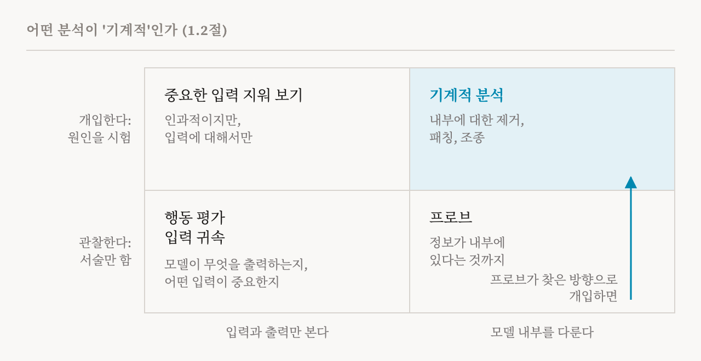
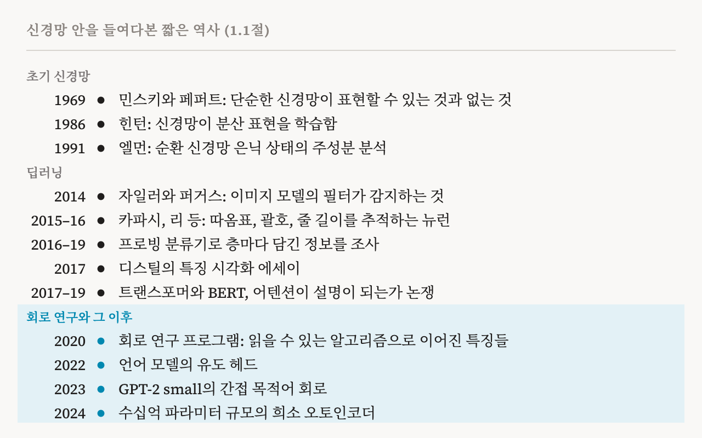

요즘 AI에는 이상한 점이 하나 있습니다. 모델을 학습시키는 과정은 처음부터 끝까지 사람이 설계합니다. 구조, 데이터, 채점 기준, 틀릴 때마다 모델을 고치는 규칙까지 모두 사람이 정합니다. 그런데 모델이 결국 무엇을 알게 되는지는 아무도 설계하지 않습니다. 이 연재가 따라 읽을 책은 이 점을 한 문장으로 정리합니다. 우리는 모델이 어떻게 배울지는 정하지만, 무엇을 배울지는 정하지 않는다는 것입니다.
교육과정과 시험 문제는 직접 만들지만 학생의 공책은 한 번도 볼 수 없는 교사를 떠올려 보면 됩니다. 교사는 무엇을 가르쳤는지 알고, 시험 점수도 볼 수 있습니다. 하지만 학생이 실제로 무엇을 이해했는지, 시험을 통과하려고 어떤 지름길을 썼는지는 알 수 없습니다. 해석 가능성(interpretability) 연구는 그 공책을 읽어 보려는 노력입니다.
이 연재는 이 노력을 다룬 책 한 권을 함께 읽습니다. 책을 장마다 따라가며 각 개념을 쉬운 말로 풀어서, 이 분야를 처음 공부하려는 사람 누구나 읽을 수 있게 하는 것이 목표입니다. 첫 편에서는 책의 서론을 다룹니다. 이 분야가 무엇인지, 어디서 왔는지, 그리고 이 책이 무엇을 하려는지 살펴봅니다.
이 책에 대하여
2026년 11월, 옥스퍼드 대학교, 밀라(Mila), 엘루서AI(EleutherAI), 텔아비브 대학교를 비롯한 열일곱 개 기관의 연구자 27명이 182쪽 분량의 책 「Understanding AI from the Inside: The State of Mechanistic Interpretability for AI Safety」를 공개했습니다. 요슈아 벤지오(Yoshua Bengio)와 스텔라 바이더먼(Stella Biderman)도 저자에 이름을 올렸습니다. 스스로는 서베이(survey), 곧 연구 동향을 정리한 논문이라고 부르지만, 짜임새는 교과서에 가깝습니다. 용어를 상자 안에 따로 정의하고, 예제를 함께 풀고, 흔히 하는 오해를 경고하고, 핵심 결과를 직접 재현해 볼 수 있는 코드 노트북도 함께 내놓았습니다. CC BY 4.0 라이선스로 공개되어 누구나 읽고 활용할 수 있습니다.
이 책을 이끄는 질문은 하나입니다. 모델이 어떻게 작동하는지 이해하면, 모델이 실제로 더 안전해질까요? 저자들은 이 분야의 많은 연구가 답이 '그렇다'라고 당연하게 여기지만, 그 가정은 거의 검증된 적이 없다고 지적합니다. 그래서 이 책은 다루는 방법마다 두 가지를 묻습니다. 이 방법은 모델 내부의 계산에 대해 무엇을 알려 주는가? 그리고 이 방법이 없었다면 할 수 없었던 일 가운데 무엇을 실제로 가능하게 하는가?
해석 가능성 격차
지난 수십 년 동안 AI의 능력은 아주 빠르게 발전했습니다. 반면 모델이 그 능력을 어떻게 만들어 내는지 이해하는 방법은 훨씬 느리게 발전했습니다. 이 책은 그 차이를 해석 가능성 격차(interpretability gap)라고 부릅니다. 모델이 할 수 있는 일과, 모델이 그 일을 어떻게 해내는지에 대해 우리가 이해하는 것 사이의 거리입니다.
이 격차가 안전에 중요한 이유는, 지금의 안전 대책 대부분이 행동을 대상으로 하기 때문입니다. 안전을 목표로 한 인간 피드백 강화 학습(RLHF)은 사람들이 선호하는 답에 보상을 줍니다. 레드티밍(red-teaming)은 모델이 잘못 행동하게 만드는 입력을 찾아냅니다. 둘 다 무엇이 들어가고 무엇이 나오는지만 봅니다. 이 책은 이런 대책이 기만적 정렬(deceptive alignment) 같은 더 교묘한 실패에는 약하다고 경고합니다. 기만적 정렬이란 모델이 좋은 행동을 제대로 배워서가 아니라, 지켜보는 눈이 있어서 좋게 행동하는 경우를 말합니다.
이 책은 모델이 커질수록 이 격차가 더 벌어질 수 있다고 봅니다. 우리가 추적할 수 없는 추론이 나타나고, 기만적인 행동이 눈에 띄지 않고, 불완전한 이해 위에 세운 안전 보장이 예상치 못한 순간에 무너질 수 있습니다. 행동을 시험하는 방식의 한계는 이 연재의 2편에서 자세히 살펴봅니다.
무엇이 해석 가능성을 '기계적'으로 만드는가
이 책의 정의에 따르면 해석 가능성은 모델이 무엇을 배웠는지, 왜 그렇게 행동하는지를 이해하려는 노력입니다. 출력만 관찰하는 데서 그치지 않는다는 점이 중요합니다. 기계적 해석 가능성(mechanistic interpretability, MI)은 그 안의 한 접근입니다. 신경망 내부의 메커니즘, 곧 안에 있는 표현과 계산을 연구하고, 그것이 신경망의 행동을 어떻게 만들어 내는지 밝히려 합니다.
이 책은 무엇을 '기계적'이라고 부를지 분명히 정해 둡니다. 분석은 두 조건을 만족해야 합니다. 첫째, 모델 내부를 다뤄야 합니다. 중간 표현, 뉴런이나 특징이나 어텐션 헤드 같은 구성 요소, 또는 학습된 파라미터가 대상입니다. 입력과 출력만 보는 것으로는 부족합니다. 둘째, 인과적 주장을 해야 합니다. 두 가지가 함께 나타나는 경향이 있다고 기록하는 데서 그치지 않고, 모델에 직접 개입해서 무엇이 바뀌는지 봐야 합니다.
스위치와 전등이 동시에 켜져 있는 것을 알아차리는 것과, 스위치를 직접 내려서 전등이 꺼지는지 보는 것의 차이와 같습니다. 이 책은 모델 안의 스위치를 내리는 흔한 방법 세 가지를 듭니다. 제거(ablation)는 어떤 구성 요소의 기여를 없앱니다. 패칭(patching)은 어떤 활성값을, 모델이 다른 입력을 받았을 때의 값으로 바꿔 끼웁니다. 조종(steering)은 활성값을 정해 둔 방향으로 밉니다. 셋 모두 실험입니다. 그래서 모델의 어떤 부분이 행동과 함께 나타나기만 하는지, 아니면 실제로 그 행동을 일으키는지 가려낼 수 있습니다.

서술(description)과 개입(intervention)의 경계가 좋은 방법과 나쁜 방법의 경계는 아닙니다. 서술하는 방법이 나중에 개입으로 시험할 대상을 찾아 주는 경우가 많습니다. 프로브(probe)는 모델의 활성값에서 어떤 성질을 읽어 내도록 학습시킨 작은 분류기입니다. 프로브만으로는 그 정보가 모델 안에 있다는 것까지만 알 수 있습니다. 하지만 프로브가 찾은 방향을 이용해 모델을 바꿨을 때 예측한 효과가 나타난다면, 그 분석은 기계적 분석이 됩니다. 이 책은 이처럼 인과적 분석으로 이어지는 서술적 방법도 깊이 다룹니다.
짧은 역사
기계적 해석 가능성이라는 이름은 최근에 생겼지만, 질문 자체는 오래되었습니다. 1969년 마빈 민스키(Marvin Minsky)와 시모어 페퍼트(Seymour Papert)는 단순한 신경망이 어떤 함수를 표현할 수 있고 어떤 함수를 표현할 수 없는지 연구했습니다. 이 결과는 신경망 연구가 한동안 쇠퇴하는 데 한몫했습니다. 1980년대에는 제프리 힌턴(Geoffrey Hinton)과 동료들이, 신경망이 하나의 개념을 여러 단위에 나누어 담는 분산 표현(distributed representation)을 학습할 수 있으며, 그러면서도 개별 단위가 해석 가능한 특징을 담을 수 있음을 보였습니다. 1991년 제프리 엘먼(Jeffrey Elman)은 작은 순환 신경망의 은닉 상태에 주성분 분석을 적용해, 신경망이 문장을 한 단어씩 읽어 나갈 때 그 상태가 움직이는 경로를 추적했습니다.
현대적인 연구는 딥러닝이 실제로 쓸모를 보이기 시작하자마자 시작되었습니다. 2014년 매슈 자일러(Matthew Zeiler)와 롭 퍼거스(Rob Fergus)는 이미지 모델 AlexNet의 필터가 무엇을 학습했는지 시각화했습니다. 앞쪽 층은 윤곽선을 감지했습니다. 뒤쪽 층으로 갈수록 점점 더 복잡한 패턴에 반응했습니다. 2015년과 2016년에는 안드레이 카파시(Andrej Karpathy) 등이 순환 언어 모델의 뉴런을 하나씩 살펴보다가, 따옴표, 줄 길이, 괄호, 부정을 추적하는 뉴런을 찾아냈습니다. 누구도 이런 것을 배우라고 시킨 적이 없었습니다. 해석 가능한 구조가 저절로 생겨난 것입니다.
이런 초기 연구는 대부분 손으로 하는 작업이었습니다. 연구자가 뉴런을 들여다보고 본 것을 보고하는 식이었습니다. 2016년부터 2019년 사이에는 프로빙 분류기(probing classifier)가 이 탐색을 체계화했습니다. 품사나 문장 길이 같은 성질을 어떤 층에서 읽어 낼 수 있는지 묻는 방식입니다. 덕분에 모델 안에 어떤 정보가 있는지에 대한 풍부한 목록이 쌓였습니다. 이 책은 여기에 이 분야 전체에 해당하는 주의 사항을 덧붙입니다. 정보가 모델 안에 있다고 해서 모델이 그 정보를 쓴다는 뜻은 아닙니다.
2017년 트랜스포머가, 2019년 BERT가 나오면서 연구자들은 어텐션 패턴이라는 새 창을 얻었습니다. 동시에 어텐션 가중치가 정말로 모델의 결정을 설명하는지를 두고 논쟁도 시작되었습니다. 2017년부터는 학술지 디스틸(Distill)에 실린 일련의 시각적 에세이가, 신경망 안에 사람이 읽을 수 있는 의미 있는 특징이 있다고 주장했습니다. 2020년 크리스 올라(Chris Olah)와 동료들은 이를 '회로(Circuits)' 연구 프로그램으로 발전시켰습니다. 신경망을, 해석 가능한 특징들이 이해 가능한 알고리즘으로 연결된 구조로 보는 관점입니다. 이 책은 이런 초기 노력이 현대 기계적 해석 가능성의 토대가 되었다고 봅니다.
이후 이 아이디어들은 언어 모델로 옮겨 갔습니다. 2022년에는 유도 헤드(induction head)가, 2023년에는 문장의 간접 목적어를 찾아내는 회로가 밝혀졌고, 작은 모델이 모듈러 산술과 정수 덧셈을 어떻게 하는지도 연구되었습니다. 2024년 중반에는 희소 오토인코더(sparse autoencoder)로 수십억 개 파라미터를 가진 모델에서 특징을 뽑아낼 수 있게 되었습니다.

이 책은 오늘날의 도구 상당수가 뿌리가 깊다는 점을 강조합니다. 희소 오토인코더는 적어도 1996년 브루노 올스하우젠(Bruno Olshausen)과 데이비드 필드(David Field)까지 거슬러 올라가는 희소 코딩(sparse coding) 연구 위에 서 있습니다. 대규모 언어 모델에서 회로를 찾는 작업은, 1990년대에 순환 신경망에서 유한 상태 기계를 뽑아내던 연구와 닮았습니다. 어텐션으로 모델을 설명할 수 있느냐는 오늘날의 논쟁은, 예전에 살리언시 맵(saliency map)을 두고 벌어진 논쟁을 되풀이합니다. 이런 연결을 알면, 정말 새로운 아이디어와 오래된 아이디어를 새 모델에 적용한 것을 구별하기 쉬워집니다.
왜 연구하는가
이 책은 세 가지 이유를 듭니다. 첫째는 안전입니다. 많은 연구자는 모델 내부를 이해하면 위험한 행동을 더 잘 찾아내고 통제할 수 있으리라 기대합니다. 이 책은 여기서 신중합니다. 행동을 보거나 상관관계에 기대는 방법이 놓치는 실패를, 지금의 기계적 방법이 다룰 수 있는지는 아직 분명하지 않다는 것입니다. 그래서 이 책은 각 방법을 얼마나 많은 이해를 주는지만으로 평가하지 않습니다. 그 방법으로 실제로 무엇을 할 수 있는지, 그 효과가 얼마나 강한지도 함께 봅니다.
둘째는 호기심입니다. 뇌처럼 복잡한 시스템이 어떻게 작동하는지 알고 싶은 마음은 과학의 가장 오래된 동기 가운데 하나입니다. 인공 신경망은 독특한 경우입니다. 뇌와 달리 모든 내부 상태를 정확히 기록할 수 있고, 어느 부분이든 마음대로 바꿔 볼 수 있습니다. 뇌에 대해서라면 답하기 무척 어려운 질문도 직접 실험해 볼 수 있습니다.
셋째는 발견입니다. 체스나 바둑처럼 어려운 과제로 학습한 모델은, 설계한 사람도 예상하지 못한 해법을 찾아낼 수 있습니다. 그 메커니즘을 되살려 내면, 모델이 쓰는 알고리즘부터 과제를 표현하는 방식까지, 모델이 스스로 찾은 지식을 꺼낼 수 있습니다. 이런 의미에서 해석 가능성은 모델을 감사하고 통제하는 수단일 뿐 아니라, 모델에게서 배우는 방법이기도 합니다.
지금 이 분야의 두 가지 변화
이 책은 최근 연구에서 큰 변화 두 가지를 봅니다. 첫째는 손으로 하는 분석에서 도구의 도움을 받는 분석으로 옮겨 간 것입니다. 오늘날의 모델은 뉴런 하나하나를 들여다보기에는 너무 큽니다. 그래서 작업의 일부를 자동화합니다. 희소 오토인코더는 사람의 지도 없이 수백만 개의 특징을 뽑아내고, 자동화된 절차가 회로 후보를 찾고, 언어 모델이 특징의 의미에 대한 첫 설명을 씁니다. 사람의 판단은 여전히 꼭 필요하지만, 어느 정도의 자동화는 피할 수 없게 되었습니다.
둘째는 우선순위가 갈라진 것입니다. 안전이라는 같은 목표를 가진 연구자들 사이에서도 그렇습니다. 어떤 연구자들은 완전한 이해를 기다리지 않고 조종, 감시, 개념 지우기 같은 안전 조치를 지금 쓰고 싶어 합니다. 다른 연구자들은 큰 비용이 들더라도 모델의 계산을 인과적으로 완전히 이해해야 한다고 주장합니다. 완성된 모델 하나가 아니라 학습 중에 모델이 어떻게 변하는지 연구하는 사람들도 있고, 모델이 자기 내부를 직접 설명하게 하려는 사람들도 있습니다. 이 책은 어느 한쪽의 손을 들어 주지 않습니다. 대신 각 방향이 무엇을 가정하고 어디서 실패할 수 있는지 정리합니다. 이 연재에서는 31편부터 33편까지가 이 내용을 다룹니다.
이 책이 다르게 하는 것
이 분야를 정리한 다른 서베이도 있고, 이 책도 그것들을 토대로 삼습니다. 이 책을 다르게 만드는 것은 몇 가지 선택입니다. 먼저, 각 방법이 실제로 안전에 무엇을 보태는지 묻습니다. 같은 일을 해석 가능성 없이도 똑같이 잘할 수 있는지까지 따집니다. 또 방법들을 목록처럼 늘어놓지 않고, 그 방법을 낳은 문제를 중심으로 설명합니다. 그리고 각 방법을 역사 속에 놓고 봅니다.
이 책은 이 분야의 용어도 정확하게 다듬으려 합니다. 개념(concept)이나 특징(feature) 같은 기본 용어조차 논문마다 다르게 쓰이고, 그 탓에 각 논문이 실제로 보인 것의 차이가 가려집니다. 예를 들어 어떤 개입이 행동을 바꾼다는 것을 보이는 일은, 그 행동 뒤의 메커니즘을 정확히 찾아냈다는 것을 보이는 일보다 훨씬 약한 주장입니다. 그래서 이 책은 방법마다 그 방법이 모델에 대해 무엇을 가정하는지, 어떤 종류의 주장을 뒷받침할 수 있는지, 그 주장이 얼마나 강한지를 밝힙니다.
마지막으로, 평가를 진지하게 다룹니다. 많은 해석 결과가 엄밀한 시험을 통과해서가 아니라 그럴듯해 보여서 받아들여집니다. 이 책은 해석에 대한 주장을 평가하는 더 나은 방법과 더 나은 안전 벤치마크가 이 분야에서 가장 시급한 열린 문제라고 주장합니다. 이 책이 제안하는 평가 틀은 이 연재의 20편에서 다룹니다.
이 책이 다루는 것과 다루지 않는 것
이 책은 오늘날 언어 모델의 바탕인 트랜스포머에 집중합니다. 깊이 다루는 주제는 기계적 해석 가능성의 기초 개념과 핵심 가설, 특징을 뽑아내는 방법, 회로를 찾고 시험하는 방법, 모델 중간의 표현을 읽는 방법, 학습 중에 메커니즘이 생겨나는 과정, 행동을 학습 데이터까지 거슬러 추적하는 방법, 연구가 나아가는 여섯 방향, 그리고 안전에의 응용입니다.
짧게만 다루는 주제도 있습니다. 벤치마크와 레드티밍 같은 행동 평가, SHAP과 살리언시 맵 같은 입력 귀속 방법, 개념 병목 모델, 그리고 인과적 추상화 이론입니다. 학습 데이터 귀속은 앞의 두 조건을 만족하지 않습니다. 행동을 내부 계산이 아니라 데이터로 설명하기 때문입니다. 그래도 이 책은 이 주제를 포함합니다. 연구자들이 이를 기계적 분석과 함께 쓰는 일이 점점 늘고 있기 때문입니다.
이 연재를 읽는 법
이 연재는 책의 순서를 따르되 몇 군데를 조금 바꿉니다. 처음 공부하는 사람이 무엇을 들여다보는지 알 수 있도록, 뉴런과 특징을 이야기하기 전에 트랜스포머가 어떻게 계산하는지부터 설명합니다. 또 책의 세 곳에 흩어진 유도 헤드 이야기를 한 편으로 모읍니다. 모두 38편이고, 여덟 부로 나뉩니다.
| 부 | 편 | 다루는 내용 |
|---|---|---|
| 왜 안을 들여다보는가 | 1–3 | 이 분야의 목표, 행동 시험의 한계, 방법의 갈래 |
| 기초 개념과 가설 | 4–9 | 트랜스포머, 특징, 회로, 그리고 방법들 밑에 깔린 가설 |
| 특징 찾기 | 10–15 | 희소 오토인코더와 그 친척들, 처음부터 읽기 쉽게 만든 모델 |
| 회로 찾기와 검증 | 16–20 | 회로 찾기, 인과적 검증, 주장을 평가하는 기준 |
| 중간 표현 읽기 | 21–25 | 렌즈, 모델의 자기 설명, 프로브, 모델 비교, 조종 |
| 학습 과정과 데이터 | 26–30 | 학습 중에 메커니즘이 생기는 과정, 어떤 데이터가 무엇을 가르쳤는지 |
| 연구의 여러 방향 | 31–33 | 여섯 가지 연구 방향, 내성, 자동화 |
| 이해에서 안전으로 | 34–38 | 편집, 조종과 감시, 위험, 열린 문제 |
각 편은 책의 몇 쪽을 다루는지 밝힙니다. 원문을 옆에 두고 함께 읽을 수 있도록 하기 위해서입니다. 책에 딸린 실습 노트북이 있으면 참고 문헌에 링크를 겁니다. 수식은 말로 풀어 설명합니다. 책에 없는 배경 설명을 덧붙일 때는 그렇다고 밝힙니다. 각 편의 끝에는 그 편에서 새로 나온 용어를 짧은 표로 정리합니다.
| 용어 | 뜻 |
|---|---|
| 해석 가능성 | 출력 너머에서, 모델이 무엇을 배웠고 왜 그렇게 행동하는지 이해하려는 노력 |
| 기계적 해석 가능성(MI) | 모델 내부를 다루고, 내부에 개입해서 원인을 시험하는 해석 가능성 연구 |
| 해석 가능성 격차 | 모델이 할 수 있는 일과, 그 일을 어떻게 하는지에 대한 우리의 이해 사이의 거리 |
| 개입 | 모델 내부의 무언가를 일부러 바꾸고, 행동이 어떻게 달라지는지 재는 것 |
| 제거(ablation) | 어떤 구성 요소의 기여를 없애는 개입 |
| 패칭(patching) | 모델이 다른 입력에서 보였던 활성값으로 바꿔 끼우는 개입 |
| 조종(steering) | 활성값을 정해 둔 방향으로 미는 개입 |
| 프로브(probe) | 모델의 활성값에서 어떤 성질을 읽어 내도록 학습시킨 작은 분류기 |
2편에서는 모델의 행동을 아무리 꼼꼼히 시험해도 가장 중요한 것을 놓칠 수 있는 이유를 살펴봅니다.